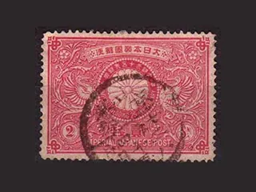
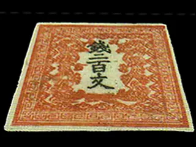

PR本ページは広告・アフィリエイトリンクを含みます。アフィリエイトサイトのため、ウリエル等のプロモーションを含みます。
ウリエルの切手買取
実家の古い切手アルバムをまとめて査定したい方へ
特徴
- 出張料・査定料 無料
- バラ・シート・台紙貼りも相談
- 断ってもキャンセル料なし
- 出張は対象17都府県のみ

画像出典：ウリエル公式（広告素材）
普通切手・記念切手・バラ・シート・台紙貼り切手を相談できます。出張料・査定料は無料ですが、公式切手ページの出張対象エリアは関東（茨城・栃木・埼玉・千葉・東京・神奈川）、中部（岐阜・静岡・愛知）、近畿（三重・滋賀・京都・大阪・兵庫・奈良・和歌山）、中国（岡山）です。エリア内でも一部の地域は対象外のため、申込時に確認しましょう。
| 買取対象 | 出張地域 |
|---|---|
| 普通・記念切手、中国切手、バラ・シート・台紙貼り | 16都府県＋岡山県※一部地域を除く |
| 買取方法 | 費用 |
| 出張・店舗・催事※宅配は今回未確認 | 出張料・査定料 無料 |
| 受付時間 | 断るとき |
| 24時間受付※年末年始除く | キャンセル料なし |
出典：ウリエル公式 切手買取ページ・ウリエル公式 切手買取LP（2026年10月13日確認）
出張は対象エリアのみ
ウリエルの公式サイトで無料査定を申し込む
ウリエルの確認ポイント
- 確認1仕分け前の切手も対象になる
- 確認2出張・店舗・催事の3つの買取方法
- 確認3出張対象エリアと費用
- 確認4公式掲載の買取実績
- 確認5公式掲載の利用者の声
- 確認6申込前のチェックとよくある質問
確認1仕分け前の切手も対象になる
ウリエルは公式サイトで、バラの切手・価値の分からない切手・台紙に貼られた切手（切手アルバム）・丸まった切手・汚れや破損がある切手も相談を受け付けると案内しています。アルバムから外したり、価値がありそうな物だけを選んだりする前に、そのまま見てもらうのが安心です。




出典：ウリエル公式 切手買取LP 掲載の参考画像（2026年10月13日確認）
確認2出張・店舗・催事の3つの買取方法
ウリエルの切手買取ページでは、次の買取方法を案内しています。
ウリエルの買取方法（公式の案内）
- 出張買取：出張料無料。その場で現金買取、その場での追加も可能
- 店舗買取：対面で相談でき、その場で現金買取
- 催事買取：予約不要、個別対応でその場で現金買取
※切手の宅配買取は、2026年10月13日時点で切手買取ページに公式の案内を確認できませんでした（提供していないという意味ではありません）。宅配を希望する場合はバイセル・福ちゃんも比べてください。

出張料・査定料無料
出張査定を申し込む（公式）確認3出張対象エリアと費用
| 関東 | 茨城県・栃木県・埼玉県・千葉県・東京都・神奈川県 |
|---|---|
| 中部 | 岐阜県・静岡県・愛知県 |
| 近畿 | 三重県・滋賀県・京都府・大阪府・兵庫県・奈良県・和歌山県 |
| 中国 | 岡山県 |
対象外の地域があります：上記の都府県内でも、一部の地域は出張の対象外です。市区町村・住所は申込時に確認してください。上記以外の道県は、切手買取ページの出張対象エリアに掲載がありません（2026年10月13日確認）。
「一部対応できない市町村がある」旨の出典：ウリエル公式 切手買取LP
費用と必要なもの（公式の案内）
- 出張料・査定料は無料
- 提示額に納得できなければ断ることができ、キャンセル料はかからない
- 出張・店舗では本人確認書類（身分証明書）の提示が必要
出典：ウリエル公式 切手買取ページ（2026年10月13日確認）
対象エリアの方はこちら
ウリエルの公式サイトで無料査定を申し込む
確認4公式掲載の買取実績
ご注意：いずれも過去の複数点の買取例で、個々の切手や将来の査定額を保証するものではありません。
横にスクロールできます
買取実績1
| 品目 | 桜切手などの普通切手まとめて（切手アルバム） |
|---|---|
| 買取価格 | 100,000円 |
| 買取日 | 2021/12/26 |
| 備考 | キャンペーン期間中の買取例 |
買取実績2
| 品目 | 赤猿切手を含む中国切手コレクション |
|---|---|
| 買取価格 | 150,000円 |
| 買取日 | 2021/12/15 |
| 備考 | 複数点のコレクション |
買取実績3
| 品目 | 見返り美人切手など切手コレクション |
|---|---|
| 買取価格 | 30,000円 |
| 買取日 | 2024/01/13 |
| 備考 | 丸まり・曲がりのある切手も含む |
出典：ウリエル公式 切手買取ページ（2026年10月13日確認）
確認5公式掲載の利用者の声
 50代女性東京都板橋区
50代女性東京都板橋区実家から大量の切手が出てきて、どうすればいいか分からなかったところ、出張買取で丁寧に対応してもらえた——という趣旨の声が、ウリエル公式の普通切手買取ページに掲載されています。
※公式サイト掲載の利用者の声を編集部が要旨として紹介（文面の転載はしていません）。個人の感想で、結果を保証するものではありません。出典：ウリエル公式 普通切手買取ページ
確認6申込前のチェックとよくある質問
申込前に確認しておくこと
- お住まいの住所（市区町村）が出張対象エリアに入っているか
- 切手の種類とおおよその量（アルバム何冊・袋いくつ など）
- 希望の方法（出張・店舗・催事）と日時
- 本人確認書類（運転免許証など）を用意できるか
- 金額に納得できないときは断れること（キャンセル料なし）
- 切手以外にも見てほしい品物があるか（その場での追加可と案内）
アルバムから切手を外してから申し込んだ方がいいですか？
ウリエルは台紙に貼られた切手（切手アルバム）も相談対象と案内しています。無理に外すと傷む場合もあるため、そのままの状態で相談しましょう。
対象エリアの都府県に住んでいれば必ず出張してもらえますか？
公式サイトでは、対象エリア内でも一部地域は対象外となる場合があると案内されています。住所を伝えて申込時に確認してください。
査定だけでお金はかかりますか？
出張料・査定料は無料で、金額に納得できず断る場合もキャンセル料はかからないと案内されています（2026年10月13日確認）。
出張は対象エリアのみ
ウリエルの公式サイトで無料査定を申し込む